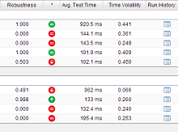
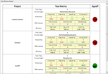
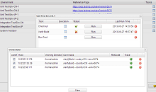

实时更新自动化测试用例文档与指标

以代码为中心进行用例管理
绑定测试用例文档和自动化代码，随代码运行实时更新。
自动化测试用例的运行历史被测量和记录，数据集中形成几个直接清楚的度量指标。
度量报告反映质量水平与测试情况

评估测试结果，提供决策依据
测试用例指标汇总后形成的度量包括：项目健康度、测试有效性、耗时与稳定三个方面。
报告可由负责人对各项目签署“通过”或“不通过”，并发送至相关各方。
面向对象的测试数据存取和组装服务

灵活地管理和复用测试数据
通过标签对测试数据分类，并存入数据仓库，在代码中使用API获取满足条件的数据。
获得的测试数据是原类型的对象，无需组装；也可合并多个数据。
任务驱动的测试环境管理与过程集成

调度本地/远程脚本，建立流程
定义任务对测试环境进行管理，可根据时间调度，并绑定多个主机上的可执行命令与脚本。
任务引擎包含多个执行绪，以并发方式运行，通过控制台追踪。